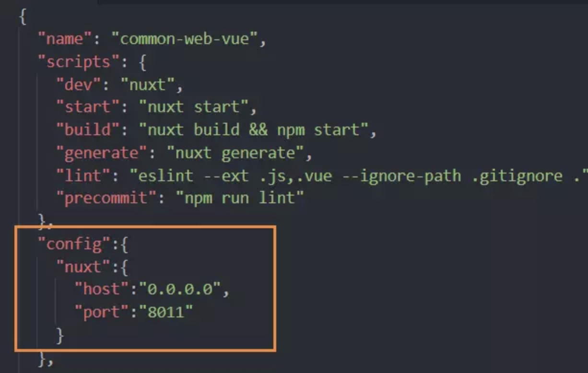

Set Nuxt.js Options
Nuxt.js常用配置
如何更改Nuxt默认端口号
我们知道Nuxt项目运行的默认端口是localhost:3000,
但是有时候我们需要多个项目同时运行，那么一个端口必然不够用，那么我们如何去修改项目的本地运行端口呢。
如果你已经启动运行了一个nuxt项目
在不更改本地运行端口的情况下就会出现如下错误：

更改项目的本地运行端口很简单
只需要在项目的package.json文件中做出相关配置就可以了。
更改之前package.json的配置:

在package.json中增加config的相关配置，如下图所示:
运行:
可以看到端口号已经修改成功了！
配置全局css
比如在asset下创建css文件夹，并创建全局css normalize.css
然后在nuxt.config.js设置文件里添加css全局设置选项。~就是代表根目录。
1 | css:['~asset/css/normalize.css'], |